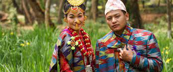

The Limbu community is an indigenous ethnic group in Nepal, primarily residing in the eastern hilly and mountainous regions of the country. With a population of approximately 700,000, the Limbu people have a rich cultural heritage and a distinct language called Limbu. They have made significant contributions to Nepal's social fabric and are known for their vibrant traditions, unique customs, and close connection to nature. Limbu culture is deeply rooted in their ancestral beliefs and practices. The community follows their traditional religion called "Yumaism," which emphasizes the worship of various deities and ancestral spirits. The Limbus have a strong connection to the natural world and believe in maintaining harmony with their surroundings. They celebrate various festivals, such as Pudah (New Year) and Ubhauli/Sakela, with traditional dances, music, and rituals.
The Limbu community has a rich oral tradition, with a wealth of folklore, myths, and legends passed down through generations. The Limbu language plays a crucial role in preserving their cultural identity and is recognized as one of the major languages of Nepal. Efforts are being made to promote Limbu language education and literature to ensure its continuity and to preserve their linguistic heritage. The Limbu people have a long history of agriculture, primarily cultivating crops such as rice, millet, maize, and cardamom. They have developed sustainable farming practices, including terrace cultivation, to adapt to the mountainous terrain. The Limbu community also has a tradition of beekeeping and traditional herbal medicine, utilizing their knowledge of local plants for medicinal purposes.
The Limbu society is organized into clans, known as "yehang," and each clan has its unique set of customs and traditions. The yehang system helps maintain social order and unity within the community. Traditional social institutions like "Parma" (public gathering places) serve as platforms for discussions, dispute resolution, and decision-making. Limbu craftsmanship is renowned for its intricacy and skill. The community excels in woodcarving, metalwork, weaving, and pottery. Traditional Limbu dresses, such as the "Pangden" (a colorful wraparound skirt) and intricately designed jewelry, reflect their cultural identity and artistic excellence. These crafts are not only a source of income for Limbu artisans but also contribute to the preservation of their cultural heritage.
The Limbu community has faced various challenges over the years, including economic disparities, limited access to education and healthcare, and the preservation of their cultural heritage in the face of modern influences. Efforts are being made by the government and non-governmental organizations to address these challenges and uplift the Limbu community. Initiatives focusing on education, healthcare, skill development, and cultural preservation aim to empower the Limbu people and improve their overall socio-economic well-being. The Limbu community's rich cultural heritage, resilience, and contributions to Nepal's diverse society make them an integral part of the country's cultural fabric. Their distinct traditions, close ties to nature, and strong sense of community have shaped their identity and continue to enrich the social tapestry of Nepal. The preservation of their language, customs, and artistic traditions ensures that future generations can appreciate and carry forward the vibrant legacy of the Limbu community.
In recent years, there has been an increased recognition of the Limbu community's rights and contributions. The Limbu people have actively participated in politics, arts, literature, and sports, representing Nepal at national and international platforms. This recognition has helped elevate their visibility and promote inclusivity within Nepalese society. The Limbu community's cultural pride, perseverance, and ability to adapt to changing times demonstrate their resilience and their commitment to preserving their unique heritage.